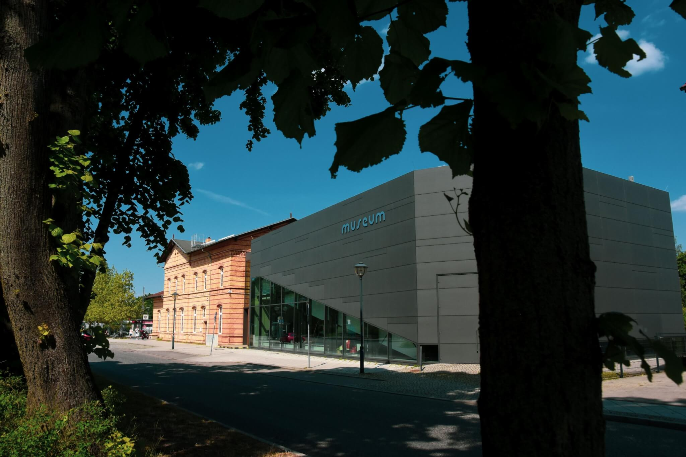
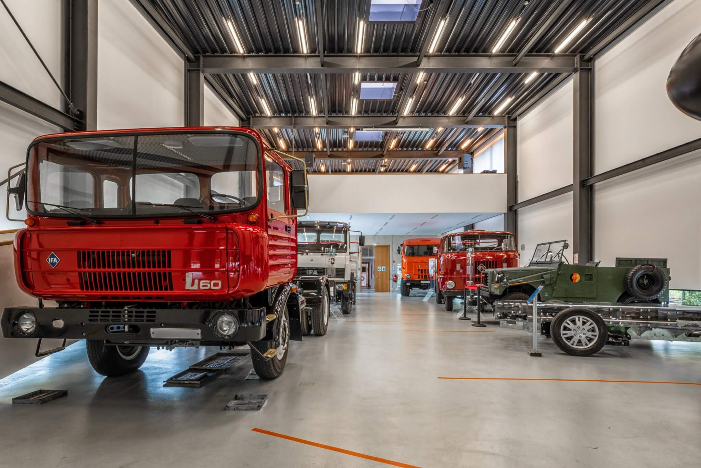

Über die Rallye
Dieser Rundgang führt dich zu drei historischen Orten in Ludwigsfelde, die stellvertretend für die industrielle Entwicklung der Stadt stehen – von den Anfängen der Eisenbahn 1843 über den Autobahnbau 1936 bis zum Flugmotorenwerk der Daimler-Benz Motoren GmbH in Genshagen. Klicke auf eine Station oder auf die Markierungen in der Karte, um mehr zu erfahren.
Stadt- und Technikmuseum Ludwigsfelde +
1843 wurde der Haltepunkt Ludwigsfelde erweitert. Mit dem Ausbau der Berlin-Anhaltinischen Eisenbahn begannen struktureingreifende Veränderungen in der Region. Durch die Eisenbahn konnten die Erzeugnisse der umliegenden Gutbezirke schneller und billiger abtransportiert werden. Bis 1886 nahm der Güter- und Personenverkehr solchen Umfang an, dass der Bau des heute noch stehenden Bahnhofsgebäudes – jetzt Stadt- und Technikmuseum – erforderlich war.
Autoren: Dietrich Carow, Manfred Krebs


Beginn des Autobahnbaus 1936 +
Der Beginn des Jahres 1936 brachte für den Kreis Teltow die Inangriffnahme der Bauarbeiten am Berliner Reichsautobahnring – der sogenannten Südtangente, die beinahe in west-östlicher Richtung durch den Kreis führt. Die Industrialisierung von und um Berlin machte diese Verbesserung notwendig. Der Abschluss der Arbeiten erfolgte im Dezember 1938 – mit diesem Abschnitt wurde der 3.000. Kilometer Autobahn mit Anschlussstrecken nach Dresden und Breslau übergeben.
Autoren: Dietrich Carow, Manfred Krebs
1936–1945 Daimler-Benz Motoren GmbH Genshagen und die Fliegerschule Berlin-Genshagen +
Die Daimler-Benz AG erhielt 1935 vom RLM Reichsluftfahrtministerium den Auftrag, ein Großserienwerk für Flugmotoren zu bauen. Am 24.01.1936 erfolgte die Gründung der Daimler-Benz Motoren GmbH in Genshagen. Der Baubeginn erfolgte auf einer Fläche von 3,75 km². Im Mai 1936 hatte das Werk eine Stammbelegschaft von 180 Personen. Im Frühjahr 1936 wurde mit dem Bau des Werkes begonnen und bereits im Herbst des gleichen Jahres waren die ersten Werkhallen fertig, die Produktion konnte anlaufen. Durch den Bau von Flugmotoren in Großserie hatte das Werk einen wesentlichen Anteil am Aufbau der Wirtschaft und nicht zuletzt auch am Wachstum des Ortes Ludwigsfelde. Im Juni 1937 bestand die Belegschaft aus 5.600 Mitarbeitern. Im Februar 1937 erfolgte die Fertigstellung des ersten Flugmotors. Das Werk war inzwischen auf 10 Produktionshallen angewachsen. Die Werkstattfläche betrug ca. 88.000 m² und die Lagerfläche ca. 13.000 m². Im Mai 1937 lief Genshagen programmgemäß. Es waren bereits 35 Motoren montiert. Trotz anfänglicher Schwierigkeiten bei der Umstellung auf den Typ DB 601 fertigt das Werk bis Dezember 1937 615 Stück DB 600 und 150 Stück DB 601.
Autoren: Dietrich Carow, Manfred Krebs, Peter Riehmann
1948–1952 Hauptreparaturenwerk Ludwigsfelde (HRW) +
Im 2. Halbjahr 1945 wurde in Ludwigsfelde eine kommunale Autoreparaturwerkstatt eingerichtet für die Instandsetzung von Gemeindefahrzeugen und Fahrzeugen der Roten Armee. Das Dokument beinhaltet einen Abriss zur Historie und zeigt in Fotos den Aufbau, die Werkstätten und Beispiele der Reparaturpalette.
Autor: Dietrich Carow
1952–1965 VEB Industriewerke Ludwigsfelde (IWL) +
Die Entwicklung des VEB Industriewerke Ludwigsfelde von 1952 bis 1965 wird in der Diplomarbeit von H. Marvin Brendel: „VEB Industriewerke Ludwigsfelde (1952–1965)" beschrieben. Die Diplomarbeit von Dipl.-Ing. Marvin Brendel wurde am 28. Februar 2006 an der Europa-Universität „Viadrina" Frankfurt/Oder eingereicht. Der Untertitel der Arbeit lautet: „Zwischen Wiederaufrüstung, Arbeiteraufstand und Mauerbau".
Autoren: Marvin Brendel, Hermann Fröhlich